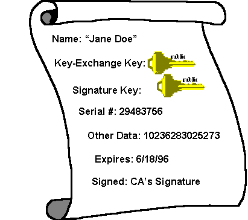
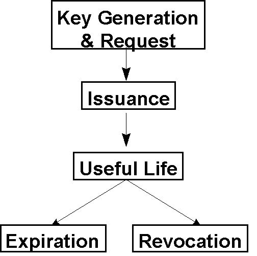

|
| ||
|
| ||
Microsoft Corporation
September 10, 1996
Certificates help answer this question. In essence, they are signed documents, which match public keys to other information, such as a name or e-mail address. Certificates are signed by certificate authorities (CAs), who issue certificates. In essence, a certificate authority is a commonly-trusted third-party, who is relied upon to verify the matching of public keys to identity, e-mail name, or other such information (e.g. issuance of credit, access privileges). Certificate authorities are similar to notaries public.
The benefit of certificates and CAs is that if two people both trust the same CA, then by exchanging certificates signed by the CA, they can learn each others public keys, and use them to encrypt data and send it to one another or to verify the signatures on document.

Figure 4. A certificate
Certificate creation is straightforward, and has six steps:
To verify a certificate, all that is necessary is the public key of the CA (plus a possible check against a revocation list). Certificates and CA's reduce the public-key distribution problem from verifying and trusting one (or more) public keys per individual to verifying and trusting the CA's public key and relying on that to allow verification of others.
Certificate authorities can also certify sub-authorities, who can issue their own certificates. This allows "trees of trust" which among other things reduces the burden on a centralized server. For example, imagine a large corporation with 4 divisions. The main CA would certify four sub-CAs (one per division) which would issue certificates for everyone in each division. Cross-divisional certification works so long as everyone has the public key of the main CA, which it can use to verify the credential of the sub-CA.
Certificates have a limited life. They are requested, created, and then either are revoked (if compromised) or expire. Expiration is important, as advances in computing power, and the potential for the discovery of holes in algorithms or protocols may make certificates unreliable. Revocation is important if private keys are compromised, or there has been a change in status or policy (e.g. a Certificate indicating that TomC is an employee of The Firm should be revoked if he leaves The Firm).

Figure 5. The life of a certificate
Revocation of a certificate uses a Certificate Revocation List (CRL), and is very similar to revocation of a bank card in the physical world. A bank cannot force someone to cut up their bank card - a CA cannot force destruction of all copies of a certificate. However, in the process of requesting authorization for a purchase above some minimum value, a bank card will be checked against a Card Revocation List to make sure that it is still valid. Someone who is going to use a certificate might want to check against a CRL to ensure validity of the certificate.
|
|
Did you find this material useful? Gripes? Compliments? Suggestions for other articles? Write us!
© 1999 Microsoft Corporation. All rights reserved. Terms of use.